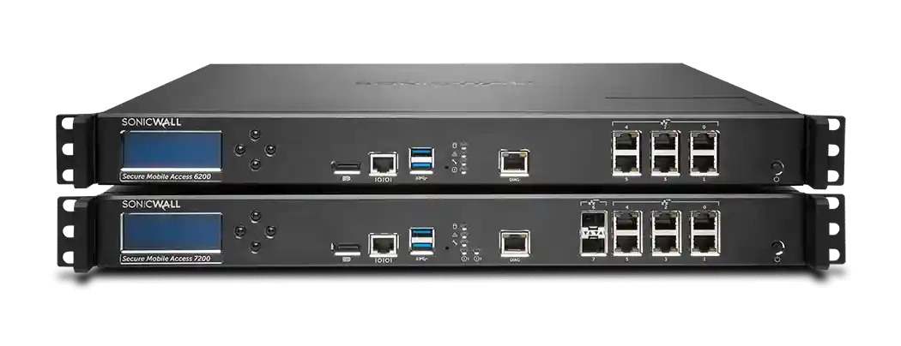

请访问原文链接：SonicWall SMA 8200v 12.5.0 - 远程访问解决方案 查看最新版。原创作品，转载请保留出处。
作者主页：sysin.org
SonicWall SMA（Secure Mobile Access）是 SonicWall 面向企业的安全远程访问解决方案，提供基于 VPN、零信任访问和多因素身份验证的安全远程接入，支持用户从任意位置访问企业内部应用和网络资源。

Secure Mobile Access（SMA）1000 系列
SMA 1000 系列提供面向各种规模组织的零信任企业级安全访问，在安全性、性能和易用性之间实现平衡。SMA 1000 专为无法将敏感资产迁移到云端的环境而设计，在确保基础设施控制权牢牢掌握在本地的同时，实现从任何位置进行安全访问。

概述
如今的员工队伍具有移动化、分布式的特点，并依赖于对关键业务应用程序的访问，其中许多应用程序由于法规、运营或安全要求仍然部署在本地。与此同时，传统的边界安全和隐式信任型 VPN 已无法提供充分的保护。SonicWall Secure Mobile Access（SMA）1000 系列以零信任为基础，提供企业级安全远程访问，使组织能够保护部署在本地、云端和混合环境中的关键资源 (sysin)。SMA 1000 验证用户身份，仅授予用户所需的访问权限，并降低暴露风险，无需迁移敏感资产，也无需依赖由云端中介的安全机制。SMA 1000 专为大规模部署和高可用性而设计，通过支持分布式网络中多达 100 万名远程 VPN 用户，为企业、政府机构和 MSSP 提供支持。随时随地办公，处处获得安全保障。
功能与优势
✅ 随时随地访问
允许用户随时随地、通过任何设备访问任何应用程序，无论设备是否受管控。让移动办公充分发挥优势，同时避免安全风险。
✅ 全球规模管理与深度可视性
CMS 简化 SMA 1000 集群的管理，并让您能够以前所未有的方式更清晰地查看网络连接。同时，通过全球流量优化、即时容量扩展以及池化许可证的动态分配，确保业务连续性。
✅ 面向不断发展的组织的强大 MFA
支持多种第三方多因素身份验证（MFA）集成，包括 RSA SecurID、Dell Defender、Google Authenticator 和 Duo Security。
✅ 通过 Web 浏览器实现零信任访问
通过 Web 浏览器提供无客户端零信任访问 (sysin)，在通过非受管控设备或公共设备连接到网络时减少威胁面。
✅ 通过单点登录（SSO）简化访问
通过易于使用且可自定义的门户，为用户提供跨设备一致的使用体验，并通过安全的单点登录（SSO）访问混合 IT 环境中的任何资源。
✅ 支持 TLS 1.3，提升安全性与性能
现在支持 TLS 1.3，这是最新的加密协议，提供更先进的密码套件选项并针对速度进行了优化，使 SMA 能够提供比以往更加安全的连接。
简化的部署路径
✅ 选择所需功能
从简单的 VPN 和安全远程访问，到全球负载均衡、高可用性以及持续的终端合规性检查，选择符合您需求的 SMA 系列型号。
✅ 评估您的需求规模
无论您拥有 10 名用户还是 10,000 名用户，SMA 1000 系列都可以扩展，以支持多达 20,000 个并发连接。
✅ 按您的方式部署
提供物理设备或虚拟设备形式，可部署在私有数据中心或公有云环境中。
SMA 12.5 发行说明
✅ 关于 Secure Mobile Access
Secure Mobile Access（SMA）为企业提供可扩展且安全的移动访问，同时有效阻止不受信任的应用程序、Wi-Fi 威胁和恶意软件。SMA 设备提供统一的网关，并在所有平台上提供一致的用户体验，包括受管控和非受管控设备。所有流量均使用安全套接字层/传输层安全（SSL/TLS）进行加密，以防止未经授权的访问。
SMA 可作为物理设备提供，也可以作为虚拟设备运行于 VMware ESXi、Microsoft Hyper-V、Amazon Web Services（AWS）、Microsoft Azure 和 KVM 上。
中央管理服务器（CMS）同样可以部署在 VMware ESXi、Microsoft Hyper-V、AWS、Azure 和 KVM 上。
✅ 支持的平台
SMA 12.5 版本支持以下 SMA 1000 系列设备：
- SMA 6200 系列（SMA 6200 和 SMA 6210）
- SMA 7200 系列（SMA 7200 和 SMA 7210）
- SMA 8200v（ESXi/Hyper-V/AWS/Azure/KVM）
- 中央管理服务器（CMS）（ESXi/Hyper-V/AWS/Azure/KVM）
✅ 支持的固件版本
运行 12.5.0 客户端软件的客户端系统，可以与运行以下固件版本的 SonicWall SMA 设备配合使用：
- 12.4.3 + 最新修补程序 → 12.5.0
- 建议从安装最新修补程序的 12.4.3 升级到 12.5.0。
✅ 新增功能
- 提供 IPv6 支持。
- 独立设备支持告警功能。
- 独立设备支持通过 LM/MSW 集成实现许可证管理。
- 支持通过 Authentication API 使用 Extraweb 身份验证。
- Web Proxy 现在默认启用跨站请求伪造（CSRF）防护。
- SNMPv3 现在支持 SHA-2。
- 系统现在会记录所有发送至 AMC 的传入请求。
- Web Proxy 会话 Cookie 现在设置了适当的安全标志。
- 支持针对 Microsoft Windows Server 2025 的基本 AD 和高级 AD 身份验证。
- 基本 Active Directory 配置现在默认启用通过 SSL/TLS 的 LDAP。
- CMS 新增选项，可为主管理员复制凭据和 API 密钥。
- CMS 新增选项，可清除受管设备上的日志 (sysin)。
- CT 新增选项，可在 SAML 身份验证中选择使用默认浏览器或嵌入式浏览器。
- 改进 Workaplce 中文件资源管理器的易用性和性能。
- 隧道客户端支持 SAML 注销。
已解决的问题不在列出详见官方文档。
适用的 VMware 软件下载
建议在以下版本的 VMware 软件中运行（Linux OVF 无需本站定制版可以正常运行，macOS 虚拟化如果不是 Mac 必须使用定制版才能运行，Windows OVF 需要定制版才能启用完整功能）：
- VMware vSphere：
- VMware ESXi 9 or with driver & vCenter Server 9 & VCF Operations 9
- VMware ESXi 8 or with driver & vCenter Server 8
- VMware ESXi 7 or with driver & vCenter Server 7
- macOS：VMware Fusion
- Linux：VMware Workstation for Linux
- Windows：VMware Workstation for Windows
下载地址
SonicWall SMA 8200v 12.5.0 trial version
SMA 8200v 12.5.0-02002 for VMware (ESXi, Fusion, Workstation)
- sma_vm_12.5.0-02002.ova
- 百度网盘链接：https://pan.baidu.com/s/1eFJvsSniEdP8sZ9SxHsc_g?pwd=?<专享>
- 通过捐赠下载此版本：点击 💙支付宝 或者 💚微信支付，扫码备注邮箱（用于识别注册用户，忘记备注请提供时间），
评论区留言指定版本（默认当前最新版），在其他平台留言恕无法处理。 - 提示：捐赠或赞赏属于自愿赠予行为，提交后即表示您对作者的支持与认可。为避免误操作，请在确认前仔细检查金额，支付完成后将无法撤销或退还。
SMA 8200v 12.5.0-02002 for KVM
- sma_vm_12.5.0-02002.qcow2
- 获取方式同上。
SMA 8200v 12.5.0-02002 for Hyper-V
- sma_vm_12.5.0-02002.vhd
- 获取方式同上。
相关产品：SonicWall NSv 系列虚拟防火墙 SonicOSX 7.3.0

文章用于推荐和分享优秀的软件产品及其相关技术，所有软件默认提供官方原版（免费版或试用版），免费分享。对于部分产品笔者加入了自己的理解和分析，方便学习和研究使用。任何内容若侵犯了您的版权，请联系作者删除。如果您喜欢这篇文章或者觉得它对您有所帮助，或者发现有不当之处，欢迎您发表评论，也欢迎您分享这个网站，或者赞赏一下作者，谢谢！
 支付宝赞赏
支付宝赞赏  微信赞赏
微信赞赏赞赏一下
敬请注册！点击 “登录” - “用户注册”（已知不支持 21.cn/189.cn 邮箱）。 请勿使用联合登录（已关闭）。